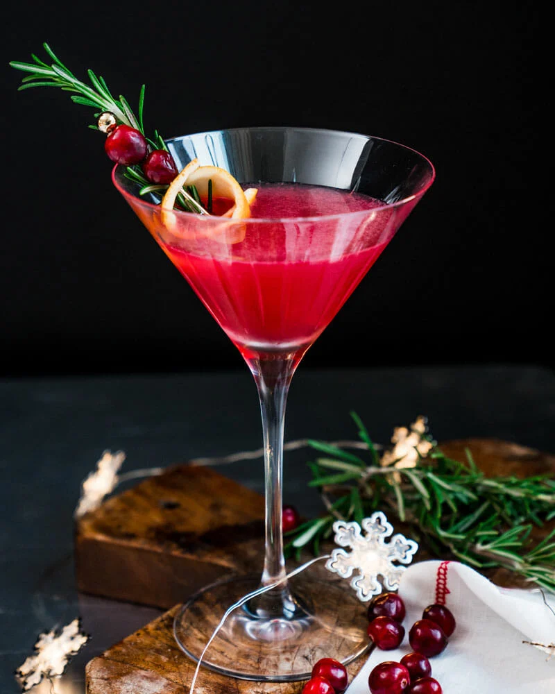

Christmas Martini Recipe

Imagine drinking a Christmas cake – this martini is how it would taste. With bourbon
and cherry brandy, plus a dried fruit syrup, it's an indulgent festive drink.
Ingredients
- 50ml bourbon
- 25ml cherry brandy
- ice
- 50g dark brown soft sugar
- 50g mixed dried fruit
- ½ cinnamon stick
- First, make the syrup. Tip the ingredients into a pan with 50ml water and simmer over a medium heat for 1 min to soften the fruit.
- Remove from the heat and leave to infuse until the mixture has cooled to room temperature. Strain and discard the fruit and cinnamon stick.
- Pour the bourbon, brandy and 15ml of the syrup into a cocktail shaker with a handful of ice.
- Shake until the outside of the shaker feels very cold, then strain into a coupe or martini glass to serve.
Return to home page